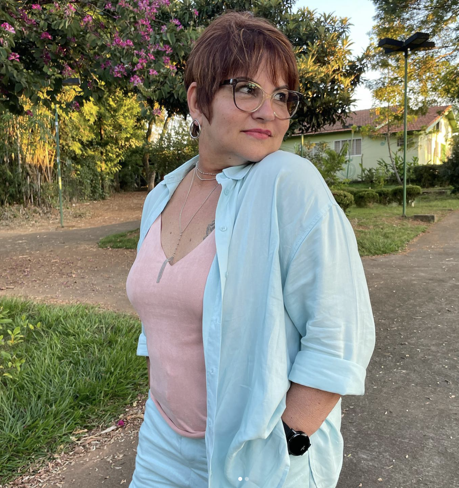

"Terapia online funciona mesmo?"
Funciona. O vínculo acontece na escuta, não na sala.
Para brasileiros que vivem fora e sentem falta de ser escutados na própria língua. Sessões online, no horário do seu fuso.
"Existe um lugar onde você não precisa traduzir o que sente."
Tem coisas que só fazem sentido na língua em que a gente sente. Aqui você fala sem traduzir, sem explicar o contexto e sem se sentir estrangeira dentro da própria história.
Entender como funcionaMudar de país mexe com tudo, mesmo quando foi uma escolha desejada. Você não precisa atravessar isso sozinha.
Quem mora fora costuma chegar com alguma dessas dúvidas.
"Terapia online funciona mesmo?"
Funciona. O vínculo acontece na escuta, não na sala.
"E o fuso horário?"
A gente encontra um horário que caiba no seu dia.
"Já tentei terapia em outro idioma."
Aqui você fala do seu jeito, sem tradução.
"Vão me julgar por ter ido embora?"
Aqui não existe julgamento.

Sou psicóloga formada pela Universidade Ibirapuera e atendo desde 2018, com base na psicanálise e forte influência de Winnicott.
Acompanho brasileiros em diferentes países que carregam a experiência de viver longe. Meu compromisso é simples: um espaço seguro, em português, sem julgamentos e no seu tempo.
"Escutar é abrir espaço para o que ainda não foi dito."
Talvez uma delas seja a sua.
"Tudo é novo, e cansa mais do que eu imaginava."
"Construí uma vida aqui, mas algo ainda falta."
"Só temos um ao outro, e às vezes isso pesa."
"Não sei mais onde é a minha casa."
Cada passo prepara o próximo. No seu ritmo e no seu fuso.
Uma conversa pelo WhatsApp, de onde você estiver.
Por vídeo, no horário do seu fuso.
A fala fica mais livre a cada encontro.
O que parecia confuso começa a fazer sentido.
Sim. Os horários são combinados de acordo com o país onde você mora, e as sessões acompanham a sua rotina.
[Plataforma a confirmar]. Você só precisa de internet estável e um lugar reservado para conversar.
[Formas de pagamento internacional a confirmar com a Rita].
Cerca de 50 minutos, normalmente uma vez por semana.
Sim. Tudo o que é dito em sessão é protegido pelo sigilo profissional.
O primeiro passo costuma ser o mais difícil. Me conte o que te traz e eu já chego sabendo como te receber, onde quer que você esteja.